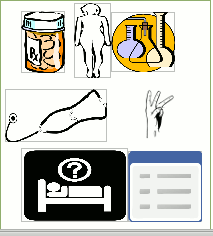

Medical Science
Headed a Trust consisting of a team of interdisciplinary staff of life sciences and medical
practitioners,NBSP at Hyderabad, India. 1998-2009
Translation work, from Sanskrit into English, of traditional Ayurvedic medicinal
practices in hypothesis formulation format from classical texts such as Charaka
Samhita
Compendiums of home remedies as medicinal practices.
Standardization of traditional medicines for the following ailments – osteoarthritis, diabetes, obesity, and others :
-
Acidity
-
Allergic Dermatitis / Eczema
-
Anaemia
-
Low Back Pain & Sciatica
-
Intestinal Worms
-
Migraine
-
Knee Osteoarthritis
-
Piles
-
Psoriasis
-
Rheumatoid Arthritis
-
Urinary Stones and Disorders
Research publications, including statistical validation, in peer reviewed journals
Submitted for publication to Indian Journal of Traditional Knowledge, New Delhi, India.
Nyagrodhadi Churna – a polyherbal formulation, and Nishamalaki–a formulation consisting of two
ingredients are Ayurvedic medicines known to be effective in madhumeha(diabetes mellitus).
Abstract of research paper at No. 8 above
To find the efficacy of these medicines associated with the traditional practices, they were prepared
following quality standards and prescribed in this trial, each as a part of Ayurvedic treatment regimen
supplement ( to allopathic medicines ), to patients with Type 2 diabetes.Mudga Churna – a fine powder of
Phaseolous mungo with no known effect in madhumeha, was also used for comparison purposes. 37 patients of
madhumeha, divided into three groups, were prescribed the three treatment regimens that included diet and
exercise.
Assessment of efficacy with reference to baseline data, follow-up at the end of forty days,
eighty days and 120 days was done using a self-designed proforma based on Ayurvedic system with the help
of the primary symptoms polyuria, nocturia, excessive thirst, excessive appetite, weight loss, weakness,
tingling sensation in the extremities, numbness in the extremities, burning sensation in the palms and
feet ; and associated symptoms s–excessive sweating, lethargy.
Symptomatic relief was found in each of the three groups of patients. Significant ( p = 0.014 ) reduction
of 0.96 in mean HbA1c ( % ) was noticed at the end of the 120 days treatment period in the Nyagrodhadi
Churna group. No major treatment emergent side effects were observed and no variance in the values of the
considered liver and renal parameters was found during the treatment period in the three groups.
The study ascertains the ‘efficacy’ of the three treatment regimens with Nyagrodhadi Churna, Nishamalaki
and Mudga Churna when administered to patients of madhumeha, each as a part of Ayurvedic treatment regimen
supplement, for a period of 120 days.
It also reveals the relative efficacy of Nyagrodhadi Churna regimen over the two treatment
The work in the Trust had to be discontinued because of lack of financial support, which had undertaken the research and translation work.